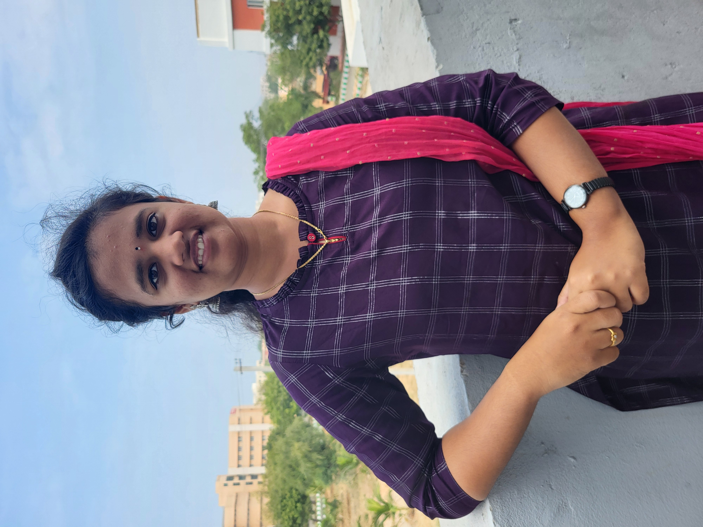

I am currently pursuing a Bachelor's degree in Computer Science and Engineering (B.Tech CSE) from JNTUA College. My academic journey has been marked by a strong foundation in computer science principles, programming languages, algorithms, and various other relevant subjects.
I take pride in XXXX achimvement and XYXY certification. These experiences have not only honed my technical skills but have also instilled in me a sense of discipline, perseverance, and teamwork.
Beyond academics, I actively participate in coding competitions, hackathons and communication clubs. These activities have allowed me to collaborate with peers, enhance my problem-solving abilities, and stay updated with the latest industry trends.
Looking ahead, I aspire with my future aspirations by equipping me with the necessary skills, knowledge, and mindset to pursue a successful career in the dynamic and ever-evolving field of computer science and engineering. I am particularly interested in artificial intelligence, cybersecurity, software development.
In summary, my journey as a B.Tech CSE student has been characterized by a dedication to learning, a passion for technology, and a commitment to personal and professional growth. I am excited about the opportunities that lie ahead and am eager to contribute my skills and knowledge to the ever-evolving field of computer science. Feel free to customize the details based on your actual experiences and achievements.